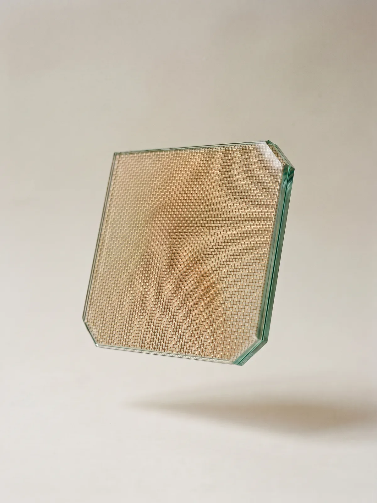
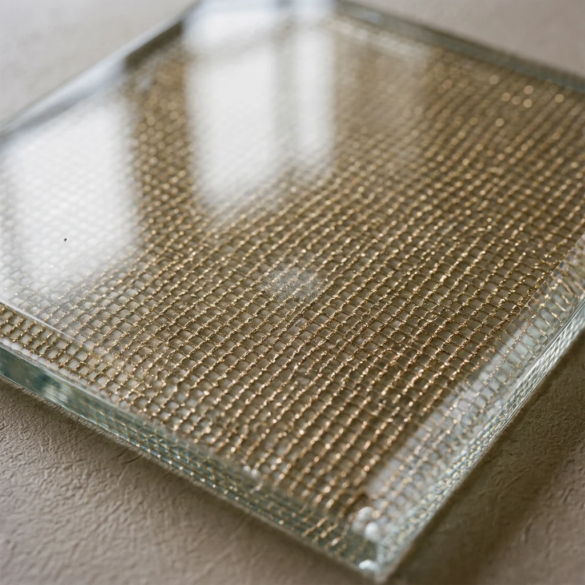
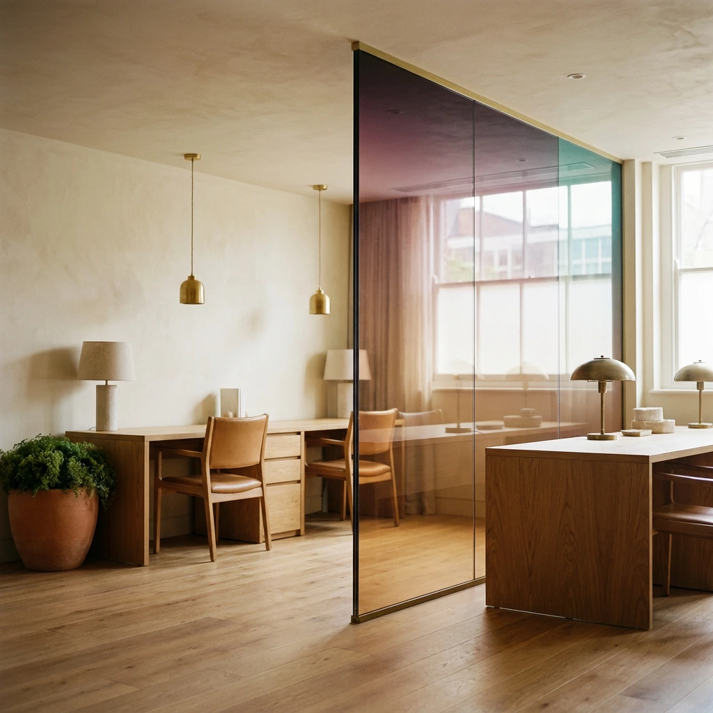
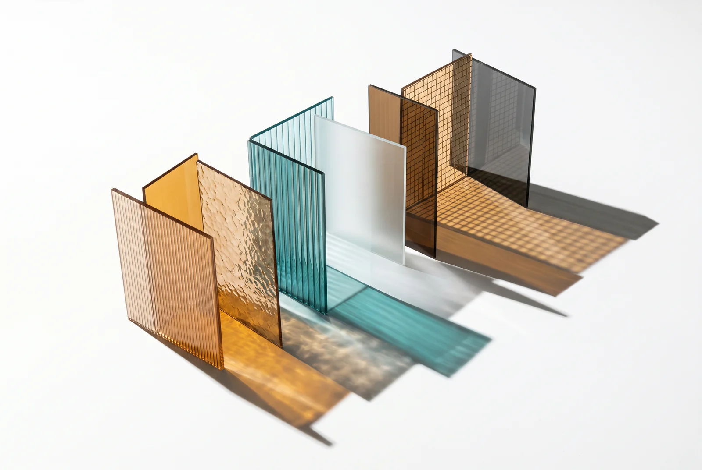
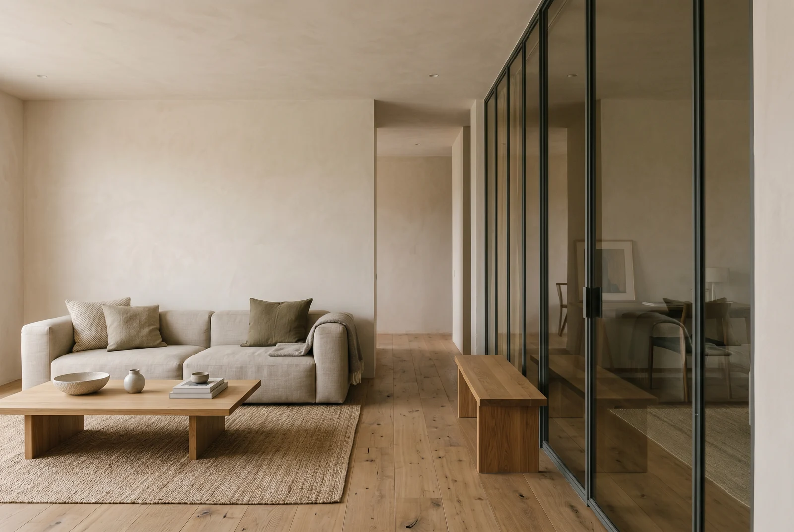

Laboratorio de vidrio decorativo y arquitectonico — Panama
Trabajamos en la interseccion entre materia y percepcion. El vidrio no se trata como un producto, sino como un sistema de profundidad, textura y luz. Cada tipo se rige por datos objetivos y se evalua mediante criterios sensoriales. Se aparta de lo convencional y, en su lugar, se procesa a traves de la intuicion material. Lo que no puede verse se estudia, se estructura y se hace materia.
Profundidad definida por lo que no esta presente.Un espectro de materia
Cinco familias · 53 formulas · laminado a medida
Cada vidrio, con su ficha.
Laminado 6 + 6 mm
Malla dorada SA-Qubo
78%
1.55 × 3.00 m

Así se construye el vidrio
Capa a capa · milímetro a milímetro

De la muestra a la obra.
Recorre el archivo de proyectos donde nuestro vidrio ya vive.La luz no se contiene, se transforma.
Cada pieza nace del estudio de la luz y la materia. Cortes precisos, acabados controlados y dimensiones a medida — la tecnica al servicio de la arquitectura.

Materia que cuenta historias.
Lo que aprendemos del vidrio, lo escribimos.
Ensayos sobre laminados, interlayers, luz y color — notas de taller para elegir mejor el vidrio de cada proyecto.

Instalaciones, reunidas en un mismo plano
Arrastra la retícula para recorrer el archivo sin límites o cambia a lista para revisar cada fotografía en secuencia.
66 fotografías · Vista retícula
Arrastrar para explorar
Trabajamos en la intersección entre material y percepción.
Pernia Glass — del laboratorio a la arquitectura
Tienes un proyecto en mente?
Cada vidrio cuenta una historia. Cuentanos la tuya.